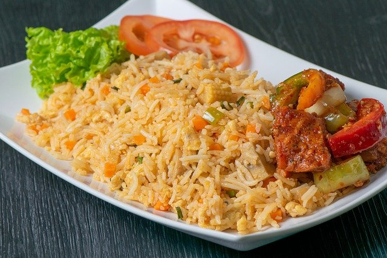

Fried Rice Rcipes

How to Make Fried Rice
This Fried rice recipe is the main deal. Whenever I want to reconcile with a friend or relative, I make them this food.
And viola!
They come hugging and kissing me and telling me to forget whatever rancour was between us. Without me saying a word
I'll tell you what, Fact speaks for itself. Let this recipe do it's magic.
I'm going to be taking you through a step-by-step process of making my magical fried rice
Let's drive right into it.
Ingredients
- Basmati rice 500g
- Bell peppers 100g
- Scotch bonnet pepper
- Chilli peppers
- Spring onions 5 medium
- Baby Carrots
- Green peas 50g
- Crayfish 50g
- Cheese 1 small block
- 1/4 cup of olive oil
Steps
Here are the steps you need to meake this hearty meal. Feel free to modify the peppers to your taste.
- Boil your rice till it's moderately soft, not too soft
- Blend your tomatoes, 2 of the onions, one large red bell pepper, and your peppers. I like to add a lot of pepper, because what's the point if I don't pass out?
- Chop the remaining onions as you like and add them to olive oil in a pan on the fire.
- This is so boring, ugh!
- Do the rest as you like.
- Enjoy whatever you have made.
- Please subscribe to my email list for more great recipes
- I;m so good at this, I know. See you!
If you like this recipes, I'm sure you'd love to see my Spaghetti recipes